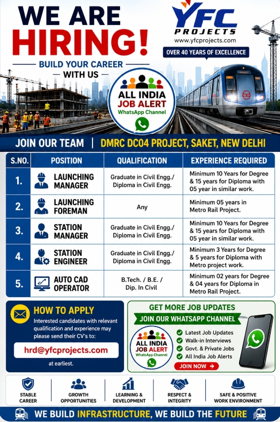

YFC Projects Recruitment 2026 – DMRC DC04 Project
Saket, New Delhi | Metro Rail Construction Opportunities

YFC Projects Recruitment 2026
YFC Projects has announced recruitment opportunities for the DMRC DC04 Project at Saket, New Delhi. The vacancy is aimed at experienced construction and metro rail professionals who can contribute to project execution and station-related works. The advertised positions include Launching Manager, Launching Foreman, Station Manager, Station Engineer and AutoCAD Operator. Candidates should carefully compare their qualification and experience with the requirement of the position they want to apply for.
Project Location and Work Environment
The project location mentioned in the recruitment poster is DMRC DC04 Project, Saket, New Delhi. Metro rail projects involve coordinated work between engineering, construction, planning, quality, safety, supervision and project management teams. Professionals joining such a project may work in a fast-moving site environment where technical knowledge, discipline, coordination and practical experience are important. Candidates should be comfortable working according to project schedules, drawings, specifications and site requirements.
Launching Manager
Launching Manager is a senior position listed in the notice. The advertised qualification is Graduate in Civil Engineering or Diploma in Civil Engineering. The poster specifies minimum experience of 10 years for degree candidates and 15 years for diploma candidates, with relevant similar work experience. Applicants should clearly show their previous project responsibilities, launching or erection exposure, site management experience, workforce coordination and progress monitoring experience wherever applicable.
Launching Foreman
Launching Foreman is listed with a minimum requirement of five years of experience in a Metro Rail Project. The qualification shown in the poster is Any. This position can be relevant to experienced site professionals who have practical knowledge of launching activities, manpower coordination, equipment coordination and daily construction execution. Candidates should mention metro project experience, designation, duration and major responsibilities clearly in their CV.
Station Manager
Station Manager is another senior civil engineering position. The notice specifies Graduate in Civil Engineering or Diploma in Civil Engineering. It shows minimum experience of 10 years for degree candidates and 15 years for diploma candidates, with similar project exposure. Candidates should highlight station construction, civil execution, contractor coordination, site management, progress reporting, quality coordination and other relevant responsibilities in their application.
Station Engineer
Station Engineer is advertised for Graduate in Civil Engineering or Diploma in Civil Engineering candidates. The poster states a minimum of three years for degree candidates and five years for diploma candidates, with Metro Project work. Applicants should describe their metro, station, building or infrastructure experience and include practical responsibilities such as drawing coordination, site execution, measurements, quality checks, contractor coordination and daily progress monitoring where relevant.
AutoCAD Operator
AutoCAD Operator is listed for candidates with B.Tech, B.E. or Diploma in Civil qualifications. The notice specifies minimum experience of two years for degree candidates and four years for diploma candidates in a Metro Rail Project. Candidates should mention AutoCAD skills, drawing preparation, drawing modification, documentation and coordination with engineering and site teams. Relevant civil, structural, architectural or metro drawing experience should be explained clearly.
How to Prepare Your CV
Candidates should submit an updated CV that is easy for a recruiter to review. A professional CV should include educational qualifications, total experience, current or previous employer, designation, project names, project locations, employment dates and key responsibilities. Candidates applying for senior positions should focus on measurable project responsibilities and leadership experience. Candidates applying for technical roles should mention software, drawings, engineering activities and relevant site exposure.
Check Eligibility Before Applying
Before applying, candidates should verify that they meet the experience requirement for the selected position. Experience requirements differ significantly between the five advertised roles, so applicants should choose the position that most closely matches their background. It is better to submit an accurate application for a suitable position than to apply for a role without the required experience. Candidates should also keep copies of their CV and application communication for their records.
Career Opportunity in Metro Rail Projects
Metro rail infrastructure projects can provide valuable exposure to large-scale urban transportation construction. Such projects generally require coordination among multiple disciplines and strong attention to safety, quality, schedule and technical documentation. Professionals with relevant experience may find these positions useful for career development. However, candidates should independently confirm the latest recruitment status and any additional selection requirements before making travel or employment decisions.
Application Process
Interested candidates with relevant qualification and experience may please send their CVs to the recruitment email address given in the original recruitment notice. Applicants should use a clear email subject mentioning the position they are applying for. The CV should preferably be sent in PDF format with a professional file name. Candidates should avoid sending unrelated documents and should provide additional information only when requested by the recruiting organization.
Recruitment Safety
Job seekers should be careful about recruitment scams. Do not pay money to an unknown person who promises selection, interview confirmation or a guaranteed job. Verify suspicious requests independently and use the recruitment contact shown in the original notice. Candidates should never share sensitive banking passwords, OTPs or other confidential information during a recruitment process. Always verify important details before travelling for an interview or accepting an offer.
Important Candidate Tips
Candidates should also review their notice period, current location, expected joining date and willingness to work on project sites before applying. Keeping these details ready can make recruiter discussions quicker and more professional. Applicants should keep their educational certificates, experience documents and identification documents available if they are requested during the recruitment process.
All India Job Alert WhatsApp Channel
For regular recruitment updates, candidates can join the All India Job Alert WhatsApp Channel. The channel can be used to receive job vacancy information, recruitment updates and career opportunities. Candidates should still verify the original source of every vacancy before applying because job advertisements can change, expire or be withdrawn. Following a job-alert channel should be treated as an information service and not as a guarantee of employment.
Get More Latest Job Updates
👉 JOIN ALL INDIA JOB ALERT WHATSAPP CHANNELFinal Summary
In summary, the YFC Projects DMRC DC04 recruitment notice offers opportunities for experienced professionals in launching, station management, station engineering and AutoCAD-related work. The location is Saket, New Delhi, and the requirements vary by position. Candidates with the relevant civil engineering qualification, metro rail experience or AutoCAD experience can review the notice and submit an updated CV. Careful preparation, accurate experience details and professional communication can help candidates present their profile effectively.
How to Apply
Interested candidates with relevant qualification and experience may please send their CVs to:
hrd@yfcprojects.com
Disclaimer: Vacancy details are based on the supplied recruitment poster. Candidates should verify the latest recruitment status and official communication before applying. All India Job Alert does not guarantee selection or employment.